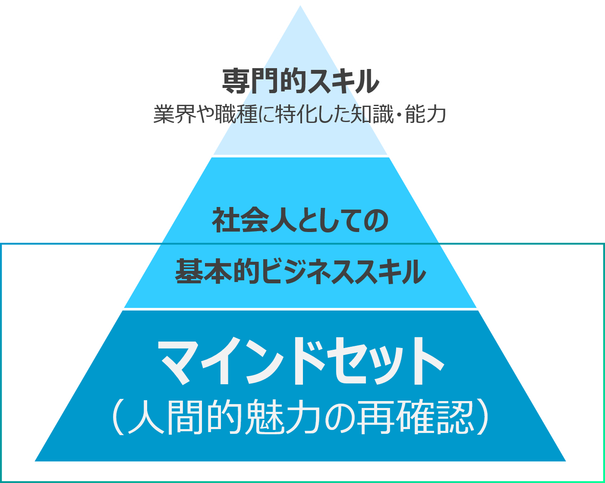

UPcomer kit
ビジネス準備BOOK
UPcomer kit work
内定者コミュニケーション ワークショップ
通信教材
kit WORK
入社までに育んでおきたい『5つの力』を
身につけさせる内定者教材キットの決定版
ビジネスに必要な『5つの力』の本質を、内定期間中に、認識し、理解し、実践していただくことを最大の狙いとしています。当教材では、本編を5巻に分け、各巻にテーマを設定。各テーマをベストセラービジネス書籍を手がける有名講師が解説しています。講演や研修経験も豊富な講師陣の導きは、これから始まる仕事人生の大きな財産になることと確信しています。
UPcomer Kit 概要
＜本編5冊＋特別付録3点＋WEBオプション/セット価格：8,000円（税別）＋送料＞
本編5冊のページ構成
前向き力（第1巻）
セルフマネジメント・モチベーションマネジメント
実行力（第2巻）
開始力・計画力・継続力
考える力（第3巻）
疑問力・振り返り力・発想力
数字力（第4巻）
数字を集める・数字をつくる・数字を比べる
ことば力（第5巻）
受信力・発信力・コミュニケーション力
巻頭インタビュー「THE Message 新人へ贈る言葉」
ビジネス分野以外の著名人から、新社会人の皆さんに向けたメッセージです。
特集「第1巻～第５巻」
１巻セルフマネジメント・モチベーションマネジメント
「前向き力」を身につけ新生活を輝かせよう
【概要】どんな環境や仕事でも、やりがいや楽しさを見出す力、それが「前向き力」です。この力を身につけることが、ビジネスの世界で成長するためにとても大切です。
2巻 開始力・計画力・継続力
社会人に欠かせない「実行力」を手に入れる
【概要】社会人に必要な「実行力」は、「開始力」「計画力」「継続力」を鍛えることで身につきます。主体的、安定的な実行力を発揮しましょう。
3巻 疑問力・振り返り力・発想力
「考える力」を磨き自ら価値を創造しよう
【概要】どんな環境や仕事でも、やりがいや楽しさを見出す力、それが「前向き力」です。この力を身につけることが、ビジネスの世界で成長するためにとても大切です。
4巻 数字を集める・数字をつくる・数字を比べる
「数字力」があれば1年目から活躍できる
【概要】どんな環境でも仕事に数字はつきものです。数字力を高めるための、数字を「集め」「つくり」「比べる」3要素を指南していきます。
5巻 受信力・発信力・コミュニケーション力
あらゆる力の源になる「ことば力」を鍛えよう
【概要】「ことば力」は、ビジネスパーソンにとって基本的かつ重要な力です。全スキルの源になる「ことば力」を、「受信力」「発信力」「コミュニケーション力」の切り口で解説します。
My Report
各巻特集の最後には、「MY REPORT」がついています。これは、内定者の皆さんに、特集に関連するレポートを作成していただくもの。人事ご担当者様のコメント欄もございますので、内定者の皆さんとのコミュニケーションにお使いください。
（人事ご担当者様向け回答マニュアルをご用意しております）

リーダーたちの原点
各分野のビジネスリーダーたちの新入社員時代（その原点）を探る人気企画です。インタビューを通して垣間見える仕事の真髄と、若き世代に贈る熱いメッセージには、刺激がいっぱいです。
本編5巻共通コンテンツ
特別付録
ビジネスPCスキルブック
特別付録のビジネスPCスキルブックでは、現代の仕事に欠かせないExcel、Word、PowerPointの3つのOfficeソフトを使いこなすスキルをわかりやすく学べます。特設サイトから業務に役立つテンプレートをダウンロードすることも可能です。
| Excel | Word | PowerPoint |
|---|---|---|
|
基本編（全8項目）
実践編（全14項目）
|
基本編（全14項目）
実践編（全9項目）
|

基本編（全11項目）
実践編（全12項目）
|
ビジネスPCスキルブック
特別付録のビジネスマナーブックでは、「お辞儀」「名刺交換」「電話のかけ方」など、入社までにチェックしておきたい基本的なマナーを網羅しています。ポケットサイズで携帯にも便利です。
- 挨拶
- お辞儀
- 言葉遣い
- 電話の受け方
- 電話のかけ方
- 携帯電話のマナー
- 来客時の対応
- 訪問時の対応
- 名刺交換
- 報告・連絡・相談
- ビジネス文章
- eメール
- ビジネスメール（社内）
- ビジネスメール（社外）
- FAX
- 寛容語句 他
ストレスマネジメントブック
特別付録のストレスマネジメントブックではストレスについての理解から、上手く付き合うための方法までご紹介します。ストレスから身を守り成長につなげる秘訣が満載です。
- 基礎編
- ストレスとうまく付き合うには?
- ストレスの正体とは?
- ストレスのもとになる出来事とは?
- ストレスをプラスにする
- ストレスに立ち向かう力とは?
- ストレス耐性や対処法は人それぞれ
- 実践編
- まずはストレッサーを明らかにする
- ものごとを別の角度から見てみる
- 理想ばかりにこだわらない
- タイム・マネジメントをする
- イライラや怒りをコントロールする
- 日々の行動を整える
さらに３つのコンテンツで協力にサポート
e-bookに対応
タブレット・スマホでいつでもどこでもチェックOK！
同封の案内チラシに沿って、専用アプリをダウンロードし、ブックIDとPASSを入力するだけ！無料で本編5冊の内容をお手持ちのタブレット・スマートフォンで、限られた時間・どんな場所でも触れることができ、社会人の必要な力を身に付けることができます。
ビジネステンプレート
Excel60種類／Word75種類／PowerPoint90種類
あらゆるシーンで役立つビジネステンプレートを、500種以上ご用意致しました。使用ソフトも幅広く、組み合わせ・使い方次第で書類作成をサポートします。
ビジネスマナー映像
いざというときの備えを徹底網羅
誰もが不安に思う「ビジネスマナー」。いつ、どんなときに遭遇するかわからないからこそ、事前の準備が大切です。実例映像で、社会人として押さえておきたいマナーを解説します。
学びを楽しむことをで、内定者はもっと成長する
自ら学び、自分の考えを共有することで
学びを加速させる通信教材と研修のセット企画
通信教材
UPcomer kit

通信教材と連動した
研修企画
学生間交流の
ファシリテーションサポート

冊子の提供から振り返り、オリジナルコンテンツでの理解の深化を フルパッケージでご提供する内定者フォロー&教育の企画です。
株式会社マイナビと共同開発した通信教材UPcomer kitと フェアブレーンの教育研修の設計ノウハウを融合させたグループワーク型研修です。
育成領域
マインドセットをベースにして積み上げていく
UPcomer kit workの教育領域
通信教育 領域
丁寧なインプットとアウトプットとリフレクション
ポイント1
通信教材でしっかりとインプットし、丁寧に学び、理解を深めることができる。
ポイント2
MY REPORTを通じてアウトプットすることで各巻のテーマを振 り返り、理解を整理することができる。
通信教育 領域
丁寧なインプットとアウトプットとリフレクション
ポイント1
通信教材でしっかりとインプットし、丁寧に学び、理解を深めることができる。
ポイント2
MY REPORTを通じてアウトプットすることで各巻のテーマを振 り返り、理解を整理することができる。
企画概要
人数(推奨)
内定者5名~30名程度
※5名~6名グループを1~5グループ作成して実施を想定
研修実施タイミング
各巻のMY REPORT終了後
実施形式
オンラインにて実施
時間
1回 / 3時間
運営ツール(推奨)
WEB会議システム Zoomの利用
※ExcelまたはGoogleスプレッドシートの利用
ファシリテーター
フェアブレーンにて運営を実施(ファシリテーター1名)
kit work コンテンツ一覧
第1巻
前向き力
"やる気スイッチ"を入れる
“やる気”を深掘りして考えることで、自分自身のモチベーション を高める方法を理解し、内定期間の取り組みを変えていく。
第2巻
実行力
実行を継続する習慣化
今から入社に向けて、自分自身が何を習得すべきかを理解し、習得するための“習慣化”を学び、日々取り組めるようにする。
第3巻
考える力
考えを広げる力と深める力
新サービスを考えるワークを通じて、0から1を生み出す体験を通じて、どのような仕事でも大切な発想力をフレームワークから身に付ける。
第4巻
数字力
情報を読み取り分析する力
社会にある様々な数字を読み取る癖をつけるために、どのように分析し、どのように読み取るのか、マーケティングの視点から学び、理解する。
第5巻
ことば力
“伝える”を組み立てる力
“伝える”という事をフレームワークを用いて体系立てて理解し、コミュニケーションとプレゼンテーションのスキルを理解する。
コンテンツ例
ストーリー
数カ月後、皆さんは社会人になります。それまでの期間、どのように過ごすか、どのような経験を積 み、どんなことを学ぶかによって、入社後が変わってきます。今から少しずつで結構ですので、準備を進めることが内定期間の大切なことです。
この内定期間に身に付けることを考え、実行していくという事を考えていきましょう。
「実行を継続する習慣化」
それでは、ワークシートに沿って進めていきましょう。
ダブルワーク
まず、皆さんが入社する会社の仕事を想像してみてください。きっと色々なスキルや考え方が必要 になるのではないでしょうか。最初にそれぞれが必要だと思うスキルや考え方をなるべくたくさん書き出してください。そして、出てきた意見をペイオフマトリクスのシートにまとめてください。ここでは、なるべくたくさん出すことが大切になります。
まとめたシートを見ながら、その中で特に身に付けるべき項目をグループメンバーで考え、2つに絞ってください。そして、その項目を身につけることを想定してプロコンリストでメリットとデメリットを洗い出 していきましょう。
2つの項目のメリットとデメリットを把握したうえで、そのスキルを身に付けるために日々、習慣として実施できることを具体的に考えてください。
ワークシート
落とし込み
□ グループワークを通じて伝えたかったことを最後にまとめることで内容を腹落ちさせる
□ 自分自身が理解できているところと理解できていないところを把握し、わからないところを質問できるようにする
□ ワークを実施して終わりではなく、落とし込みをすることで、行動につなげられるようにする
運営の流れ
スケジュールとストーリーの設計
内定期間でどの時期に冊子を送り、実施してもらうか、その後どのタイミングで 研修を実施するかをスケジューリングします。
学生の手元に冊子を郵送し、学生が受け取る
学生に冊子を送ります。学生は内定期間の読み物として目を通しながら様々なコンテンツを楽しみながらインプットします。

受け取った学生は冊子を読んでMY REPORTに取り組む
冊子の中にある課題に取り組みます。課題は自分自身の考えを書き出す機会になっていますのでアウトプットする機会となります。
kit workの開催
全員の個人ワークが終わった後に研修を実施します。研修ではそれぞれ個人の考えをシェアすることで学びを深めます。さらに、グループで取り組むことでグループでのモチベーションを高めます。
次巻を郵送し、学生は引き続きREPORTに取り組む
モチベーションを高めたうえで次巻も進めていきますので、良い相乗効果が期待できます。また、グループで進めたことでポジティブなスパイラルで進んでいきます。
| 項目 | 企画内容 | 単位 | 備考 | 料金（税別） |
|---|---|---|---|---|
| 通信教育 | UPcomer kit | 1セット | - | ¥8,000 |
| 研修企画 | kit work | 1回 | 3時間 | ¥150,000 |
| ・通信教材と連動した研修 | ||||
| ・研修のファシリテーター | フェアブレーンより1名 | |||
| ・研修進行スライド | ||||
| ・その他運営環境の設計 | Zoom/Googleドライブなど | |||
| オブション企画 | カスタマイズワークショップ | 一式 | 別途お見積もり | |
| ・研修コンテンツの企画・設計 | ||||
| ・研修の運営 |